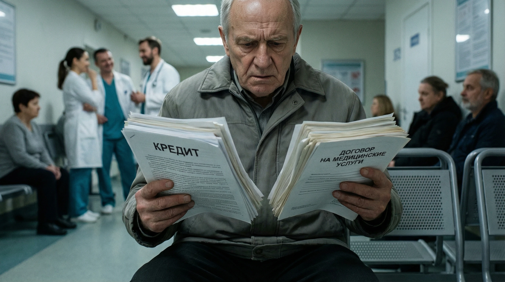

30+ лет
Практики у каждого нашего юриста

Говорим простыми словами, что можно доказать по документам и сколько это займёт.
Читаем медвыписки и карта и не даём прятать ошибку за терминами.
Истории болезни, согласия, протоколы получаем по процедуре, чтобы они имели вес.
Подбираем специалистов, которые отвечают по существу, а не пишут общие фразы.
Рассказываем каждый шаг без «тумана» и лишней бюрократии.
Без скандалов, но с чёткой позицией, чтобы клиника видела серьёзный настрой.
Контролируем путь от претензии до выплаты, а не оставляем вас один на один с системой.
Эти признаки могут указывать на ошибку врача. Сохраняйте выписки, чеки и переписку сразу.
Если лечили не то заболевание и стало хуже, получаем карту, выписки и подтверждаем даты обращений.
После процедуры осложнения, клиника списывает на «обычный риск». Нужны выписки и заключение, чтобы показать нарушение.
Не дают выписки и снимки или тянут. Запросы и ответы прикладываем к претензии как доказательство.
Лечение не помогло или навредило, клиника отрицает нарушение стандартов. Нужны акты и независимое мнение.
Страховая отказывает, ссылаясь на формальности или «нестраховой случай». Отказ и полис прикладываем к требованиям.
Без экспертизы сложно доказать ошибку и причинно-следственную связь. Готовим вопросы, чтобы эксперт дал прямые ответы.
Мы знаем как вернуть ваши деньги - потому что делаем это каждый день
Сначала получаем карту, согласия, выписки и ответы клиники. Без этих документов ошибку врача трудно доказать.
В медицинском споре нужны карта, выписки, расходы и связь между лечением и вредом.
Требуем оплату лечения, расходы, компенсацию вреда и штраф. Суммы подтверждаем документами.
Компенсация взыскивается, когда вред и нарушение подтверждаются доказательствами.
Если клиника не урегулирует спор, готовим претензию, жалобы и иск о компенсации.
Запрос медицинских документов — первый шаг к претензии, жалобе и иску.
Нужны выписки и карта, сроки и точные требования. Иначе клиника или страховая ответят шаблоном.
Нужны карта, протоколы, выписки, снимки и хронология лечения. Без полного комплекта клиника говорит, что нарушений нет.
БЕЗ МЕДКАРТЫ И ВЫПИСОК ТРУДНО ВЗЫСКАТЬВажно точно указать, какие стандарты нарушены и какой вред причинён. Ошибка в формулировках превращает требование в формальность.
НУЖНА ПРОФМЕДОЦЕНКАЧасто пишут, что осложнение — допустимый риск и всё сделано по стандартам. Это нужно опровергать документами.
«НОРМАЛЬНЫЙ РИСК» = ОТКАЗСсылаются на нарушение режима или позднее обращение. Эти записи нужно проверять и оспаривать.
ВИНУ НА ПАЦИЕНТАКлиника будет спорить о связи между лечением и вредом. Готовим медвыписки и карта, вопросы эксперту и расчёт расходов.
МЕДЭКСПЕРТИЗА РЕШАЕТ ИСХОДОппонент спорит по каждому термину, документу и сроку. Без подготовки дело легко проиграть.
БЕЗ ПРЕДСТАВИТЕЛЯ РИСК ВЫСОКПредставим ваши интересы и потребуем возврата денег
Имеем опыт, который позволяет действовать уверенно даже в сложных и спорных ситуациях
Три шага — от документов до решения
Смотрим выписки, назначения, чеки и сообщения врачей. Если документов не хватает, запрашиваем их в клинике.
Готовим претензию, расчёт расходов и вопросы эксперту. Направляем обращения в депздрав и страховую.
Если клиника отказывает, подаём иск о компенсации и контролируем исполнение решения.
Отражаем состав медицинских доказательств, заявленные требования и итог рассмотрения.
Клиент переводил деньги на карты физлиц и через онлайн-банк. После просьбы вывести средства начались новые требования.
Это не статистика. Это решения, которые вернули людям деньги и уверенность.
Коротко и по делу — что спрашивают чаще всего
Реальные отзывы людей, которые обращались к нам за юридической помощью.

Яндекс Карты
Обратился после долгого спора. Документы разобрали, объяснили, какие требования заявлять, и подготовили всё для следующего шага.

Яндекс Карты
Обратилась после спора с исполнителем. Сначала посмотрели выписки и карта и объяснили, что можно требовать. Потом подготовили претензию и довели вопрос до результата.

Яндекс Карты
Обратилась после спора, когда сама уже не понимала, что делать дальше. Документы посмотрели сразу, объяснили шаги и подготовили требования. Стало понятно, за что можно требовать деньги.

Яндекс Карты
Спасибо «Кейсу» за помощь с возвратом денег по незаконно оформленному кредиту. Всё объясняли понятно и по делу.